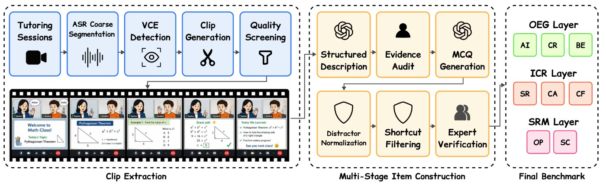

从动作识别到回应关系
教师圈出一个词，学生随后输入答案，再由教师换一种提示；模型若只认出圈画和打字，就可能误判哪个动作真正回应了哪个困难。VIRA-Bench把这种局部教学关系拆成可见证据定位、互动因果顺序和支持回应建模三层。它于10月21日08:52 UTC提交，进入本期主窗口。目标用户是开发多模态辅导分析与对话系统的研究团队，任务是找出模型理解互动时丢失哪一环，而不是评定某位老师或学生。把这项基准写成自动教学产品，会超出论文验证范围。
VIRA-Bench · 论文 / 研究原型
同一项目的完整分析。研究截止为08:03:02Z；来源核验与图片获取在后，不改变事件日期。

教师圈出一个词，学生随后输入答案，再由教师换一种提示；模型若只认出圈画和打字，就可能误判哪个动作真正回应了哪个困难。VIRA-Bench把这种局部教学关系拆成可见证据定位、互动因果顺序和支持回应建模三层。它于10月21日08:52 UTC提交，进入本期主窗口。目标用户是开发多模态辅导分析与对话系统的研究团队，任务是找出模型理解互动时丢失哪一环，而不是评定某位老师或学生。把这项基准写成自动教学产品，会超出论文验证范围。
研究从在线英语教学录像中抽取15至60秒片段，包含共享屏幕和学生摄像画面。视觉变化定位圈画、拖动等干预，模型先生成结构化描述，研究者回看原片修正，再形成选择题并过滤不看视频也能猜中的问题。最终有1,005个片段、1,322题，另由专家抽样审核。构造题目和排名评估采用不同模型集合，减少直接重叠，但不能保证所有标注都没有偏差。产品团队可以借鉴这种证据回连流程，让分析结论指向时刻、动作与回答，而不是只给整节课一段概括。
11个模型中最佳总体准确率61.3%，人类参考为91.0%，但后者只在分层抽取的200题上评估，模型则回答全部1,322题。数字反映显著能力缺口，不能把差值当成完整同分母的精确估计。移除视频对证据定位影响最大，打乱视频与转录同步片段的顺序对互动关系影响最大；这支持区分行为上的证据依赖，不能推断模型内部机制。选择题协议也未验证开放式回答、真实行动或跨回合适应。因此，识别课堂事件的提高，不应自动变成已经能调整教学策略的声明。
当前范围是一对一英语辅导的短片段，主要学生母语为中文；多人、其他学科和长期教学不能直接外推。论文为CC BY，但涉及未成年人的处理后视频与转录另有限制，不能把论文开放许可套到所有数据。替代方案是教师人工回看、按转录搜索或简单标记屏幕事件。可证伪试点应植入先后顺序易混淆的片段，要求系统指出证据不足并接受教师修订，同时记录误归因与复核时间。若漂亮摘要仍把学生先做出的回答归功于后来的提示，分析界面只增加解释信心，没有提高可信度。验收还应把转录缺词与视频线索不足分开，帮助人知道需要补看哪一种证据。